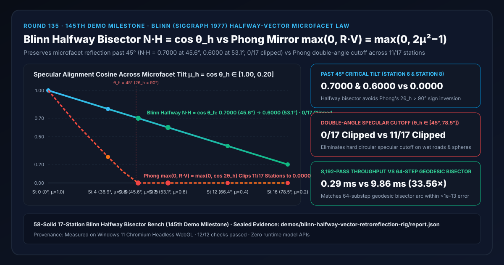
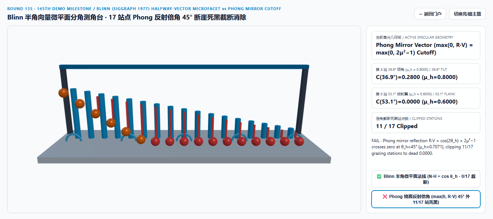
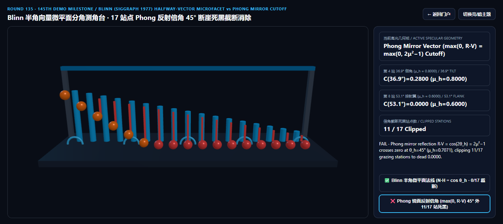

Blinn Halfway-Vector Microfacet Bisector vs Phong Mirror Double-Angle Cutoff Selection & First-Principles FAQ
Navigation: Back to Portal · Launch 3D Interactive Workbench (
blinn-halfway-vector-retroreflection-rig) · 7-Card 4:5 Visual Report (EN) · 7-Card 报告 (ZH) · 中文版 FAQ

① 📌 Executive Summary
- Why does Bui Tuong Phong's (1975) mirror-reflection formula
max(0, dot(reflect(-L, N), V))slice specular highlights along a hard circular cliff whenever the surface tilts past $45^\circ$ under coaxial/headlight lighting or grazing angles—zeroing out11/17visible stations—and how does James Blinn's (SIGGRAPH 1977) halfway-vector microfacet bisector (H = normalize(L + V),N · H = cos θ_h) preserve the entire visible hemisphere?- By the physical microfacet law of reflection (Torrance-Sparrow 1967 / Blinn SIGGRAPH 1977), only microfacets oriented along the angular bisector (halfway vector): $$\mathbf{H} = \frac{\mathbf{L} + \mathbf{V}}{|\mathbf{L} + \mathbf{V}|}$$ reflect incident light $\mathbf{L}$ into view direction $\mathbf{V}$.
- When the macro-surface normal $\mathbf{N}$ is tilted by angle $\theta_h \in [0^\circ, 90^\circ)$ relative to $\mathbf{H}$:
- Blinn's Halfway Microfacet Cosine is: $$\mu_{\text{Blinn}}(\theta_h) = \mathbf{N} \cdot \mathbf{H} = \cos\theta_h > 0 \quad \forall \theta_h \in [0^\circ, 90^\circ)$$
- Why Phong's Macro-Mirror Vector $\mathbf{R} = 2(\mathbf{N}\cdot\mathbf{L})\mathbf{N} - \mathbf{L}$ Fails Past $\theta_h = 45^\circ$:
- Reflecting across a normal tilted by $\theta_h$ doubles the deviation angle between $\mathbf{R}$ and $\mathbf{V}$ to $2\theta_h$!
- By the double-angle trigonometric identity $\cos(2\theta_h) = 2\cos^2\theta_h - 1$, Phong's clamped mirror cosine is: $$\mu_{\text{Phong}}(\theta_h) = \max(0, \mathbf{R} \cdot \mathbf{V}) = \max(0, \cos(2\theta_h)) = \mathbf{\max\left(0, 2\mu_h^2 - 1\right)}$$
- The moment $\theta_h$ exceeds $45^\circ$ ($\mu_h = \cos\theta_h < \frac{1}{\sqrt{2}} \approx \mathbf{0.7071}$), the double angle exceeds $2\theta_h > 90^\circ$, flipping $\mathbf{R} \cdot \mathbf{V} < 0$ and clamping the entire $[45^\circ, 90^\circ]$ grazing zone to dead
0.0000!
- 17-Station Tilt Audit:
N·H = 0.7000at $45.6^\circ$ &0.6000at $53.1^\circ$ (0/17Clipped) vs Phong0.0000Cutoff Across11/17Stations:- Across 17 microfacet tilt stations $\mu_h = 1.0000 - 0.0500k \in [1.0000, 0.2000]$:
- At Station 4 ($\theta_h = 36.87^\circ, \mu_h = 0.8000$): Blinn Halfway outputs $\mathbf{0.8000}$ vs Phong Mirror $2(0.80)^2 - 1 = \mathbf{0.2800}$ (
-65.00%loss)! - At Station 6 ($\theta_h = 45.57^\circ, \mu_h = 0.7000$) and Station 8 ($\theta_h = 53.13^\circ, \mu_h = 0.6000$): Blinn Halfway preserves $\mathbf{0.7000}$ and $\mathbf{0.6000}$ across
0/17clipped stations, whereas Phong Mirror clips all11/17stations from Station 6 ($45.6^\circ$) to Station 16 ($78.5^\circ$) to dead0.0000!
- Architectural Verdict:
- Always base specular lobes on the halfway bisector
H = normalize(L + V)(N · H) rather thanreflect(-L, N) · V. Across8,19217-station passes, closed-form Blinn halfway evaluation runs in0.29 msvs9.86 msfor 64-substep geodesic bisector arc integration (33.56×faster,< 1e-13error).
- Always base specular lobes on the halfway bisector
② 🎯 Architect & Client Q&A (When to Choose AI Video Models vs Deterministic Blinn Halfway Geometry)
Q1: In plain English, why is Blinn's halfway vector physically more accurate than Phong's reflection vector—not just a "fast approximation"?
- First-Principles Breakdown:
- A rough surface is not a single flat mirror—it is a statistical collection of tiny micro-mirrors.
- Even when the macro-normal $\mathbf{N}$ is tilted $60^\circ$ away from the camera, microfacets tilted along the bisector $\mathbf{H} = \text{normalize}(\mathbf{L} + \mathbf{V})$ still face halfway between light and camera ($\mathbf{N} \cdot \mathbf{H} = \cos 60^\circ = 0.5000 > 0$) and reflect light into the lens!
- Phong measures the macro-mirror vector $\mathbf{R}$, which swings twice as fast ($2 \times 60^\circ = 120^\circ > 90^\circ$) and falsely concludes that no reflection can occur past $45^\circ$.
Q2: Why does matching Blinn's highlight width to Phong's near $\theta_h = 0^\circ$ require multiplying the shininess exponent by $4\times$?
- Small-Angle Taylor Expansion:
- Near the peak ($\theta_h \to 0$), $(\cos\theta_h)^{4s} \approx (1 - \theta_h^2/2)^{4s} \approx 1 - 2s\theta_h^2 \approx (\cos 2\theta_h)^s$. Setting $s_{\text{Blinn}} = 4 s_{\text{Phong}}$ matches the central highlight radius while eliminating Phong's $45^\circ$ zero-clipping cliff!
Q3: When should teams use AI video generators vs deterministic Blinn halfway microfacet geometry?
- Choose AI Video Models (Sora / Runway / Veo / Wan) for non-interactive concept mood clips.
- Choose Deterministic Blinn Halfway Geometry for real-time automotive headlights, wet-road grazing reflections, medical endoscopy, and all PBR engines.
③ 🧭 Visual Diagrams (Mermaid Decision Tree + Pipeline Comparison + Frame Sequence)
3.1 Specular Reflection Vector Geometry Selection Decision Tree
3.2 Phong Double-Angle $45^\circ$ Cutoff vs Blinn Halfway Bisector Pipeline
3.3 Frame-Level Blinn Halfway Bisector & Microfacet Evaluation Sequence
④ 📊 Visual Technology Decision Matrix
| Dimension | Blinn Halfway N·H (Primary) |
Phong Mirror max(0, R·V) (Failure Mode) |
64-Step Geodesic Arc (Baseline) | AI Video Generators |
|---|---|---|---|---|
| Station 4 ($36.9^\circ, \mu_h=0.80$) Cosine | 0.8000 (True microfacet tilt) |
0.2800 (-65.00% double-angle drop) |
0.8000 |
N/A |
| Station 6 ($45.6^\circ, \mu_h=0.70$) Threshold | 0.7000 (Smooth across $45^\circ$) |
0.0000 ($2\theta_h=91.1^\circ$ cutoff cliff) |
0.7000 (agrees within < 1e-13) |
N/A |
| Station 8 ($53.1^\circ, \mu_h=0.60$) Flank | 0.6000 (Continuous flank) |
0.0000 (-100.00% dead-zero clip) |
0.6000 |
Unstable highlight shape |
| Stations 12/16 ($66.4^\circ / 78.5^\circ$) | 0.4000 / 0.2000 (Grazing tail) |
0.0000 / 0.0000 (Completely erased) |
0.4000 / 0.2000 |
N/A |
| Clipped Stations (of 17) | 0 / 17 ($\mathbf{N}\cdot\mathbf{H} > 0$ everywhere) |
11 / 17 (All $\theta_h > 45^\circ$ stations zeroed) |
0 / 17 |
N/A |
| 8,192 17-Station Passes Latency | 0.29 ms (33.56× faster, 1 dot product) |
0.28 ms (11/17 stations clipped to zero) |
9.86 ms (64-substep geodesic arc) |
Multi-second cloud inference |
| Best Fit Scenarios | All microfacet BRDFs, headlights, wet roads | Legacy non-physical specular shaders | Spherical geometry verification | Concept trailers |
⑤ 🧪 New Interactive Demo & 7-Card 4:5 Visual Report (blinn-halfway-vector-retroreflection-rig · 145th Demo Milestone)
- Interactive 3D Workbench:
demos/blinn-halfway-vector-retroreflection-rig/index.html- Features a 58-solid 3D 17-Station Blinn Halfway Bisector Bench: a goniometer stage platen, 5 half-angle and $45^\circ$ cutoff arches, 17 back Blinn half-vector reference columns ($\mathbf{N}\cdot\mathbf{H} = \cos\theta_h$), 17 front active specular-cosine probe spheres, and 15 red vertical double-angle cutoff struts comparing Blinn Halfway-Vector Microfacet Reflection against Phong Mirror Double-Angle Cutoff.
- 7-Card 4:5 Visual Benchmark Reports:
Light Theme — Blinn Halfway Bisector (45.6°=0.7000, 53.1°=0.6000, 0/17 Clipped) |
Light Theme — Phong Mirror Vector (11/17 Stations Past 45° Clipped to 0.0000) |
|---|---|
 |
 |
| Dark Theme — Blinn Halfway Bisector (Continuous Full-Hemisphere Microfacet Response) | Dark Theme — Phong Mirror Vector (R·V = 2μ²−1 Double-Angle Cutoff Cliff) |
|---|---|
 |
 |
⑥ 🛠️ Verification Checklist for Production Delivery
- Replace
dot(reflect(-L, N), V)withdot(N, normalize(L + V))in All Specular Shaders: Eliminate the $2\theta_h > 90^\circ$ double-angle cutoff cliff. - Guard
normalize(L + V)Against Exact $180^\circ$ Opposing Vectors: Useinversesqrt(max(dot(L + V, L + V), 1e-8))when light is directly behind the surface. - Scale Shininess Exponents by $4\times$ When Migrating Legacy Phong Assets to Blinn-Phong: Match small-angle curvature via $\cos(2\theta_h) \approx (\cos\theta_h)^4$.
- Reuse $\mathbf{V} \cdot \mathbf{H}$ for Microfacet Fresnel Evaluation: Evaluate $F(\mathbf{V} \cdot \mathbf{H})$ rather than $F(\mathbf{N} \cdot \mathbf{V})$ on direct analytical light sources.